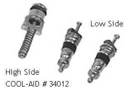

Go Home
Site Map
Go Home
Site Map
Motor Vehicle Air Conditioning
WARNING: This article covers only a few specific issues with the AC system that are not listed in most service texts. It is nowhere near a complete reference. Performing AC work without proper tools and background information can result in major system damage and even fatal explosions of the system.
Current USEPA regulations and information about approved substitutes can be found here: http://www.epa.gov/ebtpages/airairporefrigerants.html
If that link breaks start at the EPA's Home Page.
R12 (CFC-12, DuPont Freon® 12)
It is a Criminal Offence in the United States for unlicensed persons to use, recover, sell, or purchase, R12 and R22 family refrigerants. Large fines and jail time are both possible if convicted.
The licenses for these refrigerants are for the specific class of system involved. You cannot service R12 motor vehicle systems if you have only the HVAC license for residential/commercial systems. You cannot service residential/commercial systems if you have only the MVAC license.
It is also criminal to discharge refrigerant into the atmosphere. Refrigerants must be evacuated using only approved equipment for the type in question. I believe this applies to ALL refrigerant including R134 and others on the EPA approved list. WARNING: Evacuation systems are type specific. Contamination of an R134 machine with R12 or R22 can ruin the machine.
System ID Label
The Identification Label for the AC system is located on the front of the evaporator case in the spare tire bay. The heater hoses and the sunroof storage tray often hide it. Look for a blue and silver label with the Harrison logo on it.
The label will tell you the R12 charge capacity by weight. When converting to R134a start with 80% to 85% of the R12 charge and add more if needed. You should not need more than 90% of the R12 charge amount. (Charging R134a to more than 90% of the R12 capacity can damage/destroy the system!)
Clean Me!
Like brake work, an AC system must be clean. Clean off all the fittings before you open them to prevent trash getting inside. Plan on cleaning your hands anytime they are greasy. (Like after pulling the compressor...)
Heavy exterior dirt is best removed with water and citrus or "Simple Green" type cleaners. You want something that rinses away without residue. Avoid petroleum solvents!
Flushing
I generally do not recommend flushing to most people. The main problem is that any flush that doesn't exit the system can damage the compressor. If you use the wrong flush, it can react badly with the R134 or it's lubricants.
In most cases you are better off just to blow the lines and things out with Clean, Dry, Oil Free air. Since you should be pulling things apart to replace the seals, this isn't very difficult. (If the compressor blew chunks you have a very ugly mess to clean up. In this case you may have to flush things.)
If you do flush, it's best to flush individual parts rather than try to do the whole system at once. This way you won't blow stuff down a line and plug something else. It's also easier to make sure the flush agent is completely blown out of a single part. You can also easily blow the flush/air thru in either direction, which can solve access problems.
Keep in mind that oil that has soaked into the hoses is helping to keep the R134 in the system. You don't want to remove that oil, just remove any excess running around the system. So don't drown the soft lines with flush agent.
The evaporator is nasty to flush. You'll have a fairly hard time getting it clean without removing it from the car. Any R12 oil in it will tend to just sit there and not hurt anything. Even if you flush and dry everything else completely, avoid the evaporator if you can.
The lines and condenser usually won't hold much oil and shouldn't need much to clear it out.
Schrader Valves
Warning! Do Not attempt to use standard tire valve cores in AC work no matter how similar they look! The materials are not compatible with the refrigerants and lubricants in AC systems.
There's one item that is commonly over looked during AC work. Even I did it.... Don't forget to replace the Schrader valves! Especially on a system that is flat to start with. It's a really good idea to replace them any time an old system is torn down but you should always replace them before an R134 conversion. It really sucks to do a bunch of work on a system just to have a POS service valve start leaking.
When you replace the ACC/dryer you get 2 new valves in it.
BUT!
You still have to replace the high side one yourself. If they leak you'll loose the entire charge from the system in short order. If this wasn't annoying enough, the high side doesn't use a standard valve like the ACC/Dryer. (The R134 valve covers are NOT capable of sealing against the full working pressure of the high side! They won't even hold static pressure.)
Once again MotorMite comes thru. COOL-AID! Part # 34012 gives you all three valves. Two standard valves for the ACC/Dryer and the oddball valve used in the high side port. #34519 is the valve core tool. I got the valves and tool in stock at Advance Auto for $5 and change. You'll have to order them just about anyplace else. Advance also has O-rings and other stuff in stock. Even if you only need the high side valve the MotorMite package is cheaper than AC Delco, which charges around $6 just for the high side valve. You can also get the MotorMite items online at PartsAmerica.com and likely other online parts stores. (Use the part number search to find them quickly.)
While the standard valves can be removed with regular tire tools, the high side valve can only be removed with the proper tool.
In case you ever need them... The AC Delco part # for the high side valve is 15-5375. The Low side is 15-1119.
I replaced a Schrader valve but it still leaks...
This is a very likely thing to happen. It happens mainly on the high side but can happen on the low side fittings as well.
I think by now most people know how the tire style low side valve works but the high side is different. When the high side valve's stem is depressed, the whole section that the O-ring is on moves. The O-ring is all that seals the valve in the high side fitting. If the walls of the fitting are pitted or scratched then the O-ring won't seal.
The fix for this is to use a straight or angled fitting with it's own valve. Unfortunately, to install these you might have to evacuate the system to remove the OE valve.
But I already installed R134 conversion fittings...
Warning! Do not try to unscrew conversion fittings! The R134 fittings have thread locker in them and bond to the R12 fitting after install. Do Not heat the fittings to release them!
Most conversion sets include very minimalist straight adaptors that use the OE Schrader cores. With these basic adaptors, Schrader cores can be replaced without removing the adaptors. The MotorMite tool listed above will work with these adaptors installed.
If you find out after installing the basic R134 adaptors that the low side valve is leaking, you need to pull the extension out of the low R134 adaptor and then you can reach the valve. (The extender, when removed, looks like the top part of a regular valve stem. It reaches thru the R134 adaptor to depress the valve in the ACC/Dryer port.)
Sometimes a valve simply refuses to seal because the fitting is bad. In this case you need to remove the OE Schrader and the R134 adaptor then replace it with a R134 fitting that has its own valve core. You can get these fittings at most good parts stores and they come in straight or right angle versions.
The currently installed R134 adaptor will have to be split for removal. You'll have to carefully cut them along the axis until you are very close to hitting the threads. Then use something to expand the cut and break the remaining adaptor metal. Be very careful that you don't damage the flair face! You will need that flair to seal the new adaptor.
O rings and seals
| O-ring Color | Material | Who |
|---|---|---|
| Green | HNBR (Hydrogenated Nitrile Rubber) | Multiple sources |
| Blue | Neoprene | Four Seasons, Murray, Everco |
| Black | Neoprene | GM |
According to various sources, Green O-rings are supposedly for use only with R134. Neoprene can be used with all refrigerants and is recommended for many alternatives other than R134.
The Green ones are supposed to work better with R134 than the Neoprene, but there is allot of debate how much better they may or may not be. If you are using any other alternative, you should contact the makers of that product to see what they recommend.
Assembly Lube
You need to coat the new O rings with oil before you put a fitting together. The best way to do that is with a cotton or foam swab soaked in the same oil you will use to charge the system. Do NOT use anything but refrigeration oil! Motor oil and ATF are not acceptable for this use.
Don't leave the oil bottle open while you work. The oil can pickup moisture or worse dirt that will end up in the system. Using a swab prevents this. One swab will do several seals. To prevent contamination of your oil supply, use a fresh swab each time you need more oil.
Nylog
Nylog is a sealing aide that is refrigerant compatible. You use a tiny bit on each O-ring/seal during install. It's the AC equivalent of using Permatex Super 300 on an engine gasket.
Nylog is used instead of oiling the seals and Schrader valves during assembly. The seal and surfaces should be clean and dry when using Nylog.
Other Sealers
Supercool makes "Refrigerant Leak Lock with Teflon®" (Part No. 7012) and it's available thru many auto parts stores. I've only used it a couple times so I don't have enough info to say how well it works. I use it with "primary sealing" valves for GM high side test fittings. The valve has an O ring but the high side fitting isn't the best seal surface. I use the sealant on the fitting threads as a backup for the gasket.
Compressors
Preloading the Compressor oil
Not all compressors have a sump and the ones that do can hold anywhere from Two to Eight ounces of oil. There is some variation even between the older DA6 and HR6 compressors. If you don't fill the sump on compressors that have one, you could fry the thing. If you dump a bunch of oil into a compressor without a sump, you could cause it to lock up. (Same effect as cranking an engine full of water... crunch!)
DA6/HR6
HR6 replaces DA6. If you are replacing compressors use HR6 when possible, especially for R134a.
DA-V5
1986 to 1988 Fiero's with 4 cylinder motors have a different AC system than all other Fiero models. This system uses a Delco Air DA-V5™ compressor with variable displacement. This system should not be treated like the DA6/HR6 fixed displacement compressor during charging.
With a fixed displacement compressor like the old A6 you could easily charge based on a pressure and temperature chart and end up with the system pretty close. With a variable unit it is extremely important to charge by weight. If you charge this system like an A6 you can easily over charge it.
If you must pressure test the system then you must follow GM's guidelines in the shop book. There are 5 pages of charts with all the pressure and testing conditions for the whole system. (The charts are also in AllData.) Failure to follow the charts can produce very confusing or misleading test results. If the compressor is not running at full load pressures will be reduced some. This can lead you to think the system is not fully charged when it is actually fine. (I can't publish the charts. They are copyrighted GM material.)
The Control Valve
Four Seasons, and probably other lines, offer R12 and R134 control valves for the DA-V5. The control valve is in the compressor and controls compressor displacement. Its job is to constantly match compressor displacement to the needs of the car at any given time. This valve makes it possible to eliminate clutch cycling and greatly reduces engine load most of the time.
When buying replacement compressors, you need to check which valve the compressor has. If you use the R12 valve with R134 you'll loose some system performance. On the other hand, if the replacement has the R134 valve, and you run R12, then you could have serious problems, like blowing up high side components or frying the compressor.
Ideally you want the correct valve with your R134. That said, I'm running R134 in an unmodified R12 V5 as part of my on going testing. I probably loose some effectiveness but it wasn't that big a deal to me. Plus it appears to limit high side pressure, which isn't a bad thing on an old system.
Pumping Down
When you are pumping the system out, run the vacuum pump until you reach the deepest vacuum you can. Once the vacuum gauge stops dropping, close all valves shut off the pump and let the system stand awhile, at least 30-60 minutes. Then open valves and run the pump again.
When you pull the first vacuum, the expanding gas and water vapor can drop lots of heat. As they get colder, they become more difficult to get out of the system. (The stuff can actually freeze.) Allowing the system to stand lets things warm back up. You'll get much better results with less wear on the pump.
The standing time will also provide a leak test. The gauge should come up some as the system warms back up and things expand but if the vacuum gauge shoots up as soon as the valves are closed then you probably have a leak. This isn't as reliable as a pressurized test with dye but it can give you warning to a potential problem. (This "test" only works if you are using a dual gauge manifold set. You can't count on the pump's check valve.)
Charging
Don't charge liquid refrigerant into the system! If you charge liquid into the accumulator you run a significant risk of slugging the compressor with liquid. This will hydraulic lock the compressor and destroy it.
Which way is up?
When used with a screw on can tap... Pressurized oil and sealer cans are charged head down. Plain refrigerant is charged head up.
The oil/sealer/dye products often contain some liguid refrigerant but it's usually not enough to run a risk of slugging the compressor. Just give the accumulator a couple minutes to process it to be safe. All refrigerant only cans should be vapor pushed to the low side test port and this will go allot faster if you keep the cans warm as noted below.
Tips
The pressurized oil/sealer cans are installed first! Then straight refrigerant cans get loaded. If you don't do this you may have trouble installing the oil/sealer. Charge oil/sealer cans into the ACC/dryer ports only!
The charging will go faster if you put the cans in a bucket of warm water. The water should not be hotter than 100-110F or you could burst the can. (If you can't easily keep your hand in the water, it's too hot. Remember that these cans are intended to fail in a controled manor when over pressured. This is done to keep them from grenading if accidently connected to the high side test port.) The system usually will not engage the compressor until at least one full can is installed. This is normal!
Can You Smell That Smell?
Yuck. There aren't very many things that smell worse than a rotten AC system. This stench can make even the most luxurious cars miserable to drive.
What Causes AC to stink?
AC smell is the result of what happens after you shut off your car. You see the AC box quickly becomes a very warm wet place that Mold and Microbes love to grow in. Add in some debris like bits of Leaves or Grass clippings and you have a perfect Playground for stuff to grow like mad.
How do you prevent AC stink?
There are a few things you can do. A couple of "free" ones...
Clean out the AC system. Yes this is allot of work on many cars but if the system is full of crap then keeping it from stinking will be extremely difficult even with the strongest commercial products. It is amazing how much crap can load up an AC system. You'll likely also improve performance of the system.
Make sure you flip the Climate Control system to a mode that kills the AC and turn the blower to high during the last mile or two of your trip. Even a couple minutes of running like this will help blow water out of the evaporator. Remember this problem needs moisture. (In Fiero... If you are in Normal AC mode, pressing the Vent button will shut off AC without changing the mode door position.)
There are a number of spray/foam products on the market that can help as well. Again if your system is full of trash any help you get is likely to be greatly reduced.
GM AirSept and maybe others now offer After Run timers that can be fitted to most vehicles. These run the blower after shutting off the car to dry out the system automatically. This is probably one of the best long-term odor fixes there is. (Many newer cars have this timer box built in or as a software function programmed into the BCM.)
If you want more detail on AC smell, visit AirSept and this article at IMCool.
Links
Refrigeration Technologies, maker of Nylog.
AC Source, one of many places you can get Nylog and allot of other AC parts/tools online.